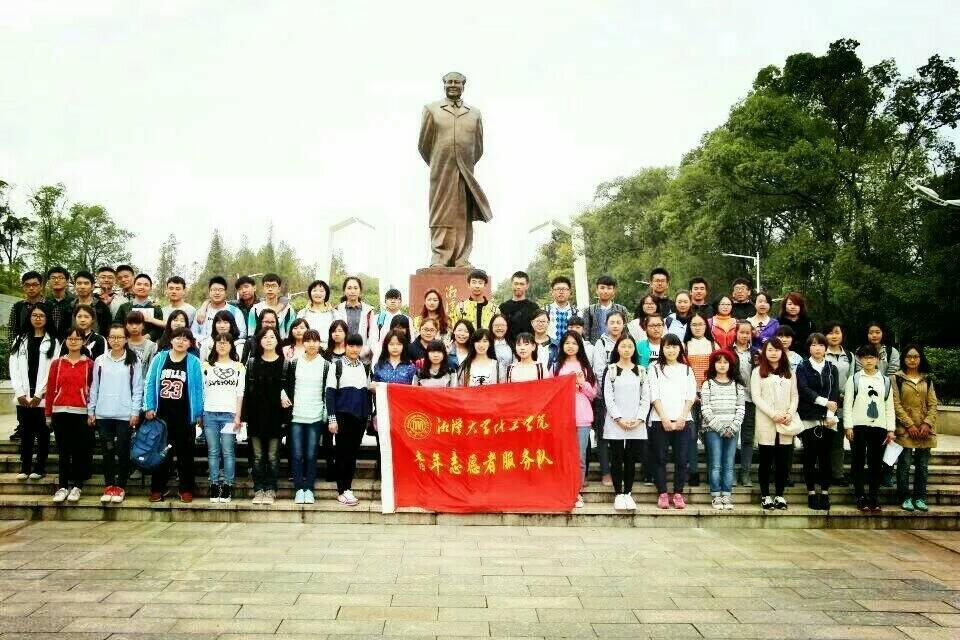
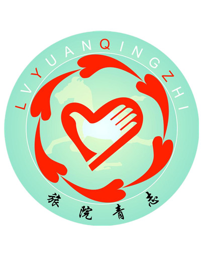
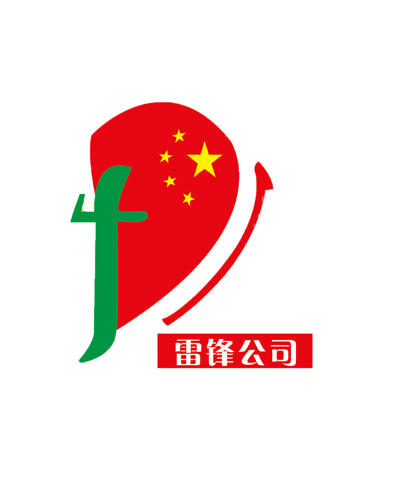

微信投票规则：
1.关注“湘潭大学三翼校园”微信公众平台（微信号：isky31)
2.输入“芙蓉学子”或者点击下方菜单栏“芙蓉学子”进入图文进行投票
3.每天每个用户在每个奖项只有一次投票机会，
4.每个奖项只能选择一个团队或个人进行投票
5.投票时间：2017年11月25日15：00——2017年11月27日15：00
6.禁止刷票，凡是刷票一律取消资格
1.关注“湘潭大学三翼校园”微信公众平台（微信号：isky31)
2.输入“芙蓉学子”或者点击下方菜单栏“芙蓉学子”进入图文进行投票
3.每天每个用户在每个奖项只有一次投票机会，
4.每个奖项只能选择一个团队或个人进行投票
5.投票时间：2017年11月25日15：00——2017年11月27日15：00
6.禁止刷票，凡是刷票一律取消资格

化工学院青年志愿服务部
化工学院青年志愿服务部自2001年成立以来一直致力于公益事业，其重心在关爱留守儿童系列活动上，以爱心支教、代理家长等品牌公益活动为主，每年进行回馈社会，感知关爱，慰藉心灵的小型公益活动，如走访敬老院、冬衣募捐、义捐义买、徒步公益行动等。青春志，我愿行！我们用心做公益，用爱暖人间！
化工学院青年志愿服务部自2001年成立以来一直致力于公益事业，其重心在关爱留守儿童系列活动上，以爱心支教、代理家长等品牌公益活动为主，每年进行回馈社会，感知关爱，慰藉心灵的小型公益活动，如走访敬老院、冬衣募捐、义捐义买、徒步公益行动等。青春志，我愿行！我们用心做公益，用爱暖人间！

旅游管理学院青年志愿者服务队
呵护三教，予教室洁净； 整理图书馆，令图书井然； 募集一元基金，使小善成其大； 关爱自闭症儿童，让微举扬其功。 公益在行动，我们在路上。 旅游管理学院青年志愿者服务队， 我们要为公益做最具感召力的代言。
呵护三教，予教室洁净； 整理图书馆，令图书井然； 募集一元基金，使小善成其大； 关爱自闭症儿童，让微举扬其功。 公益在行动，我们在路上。 旅游管理学院青年志愿者服务队， 我们要为公益做最具感召力的代言。
湘潭大学学生会青年志愿者服务部
湘潭大学学生会青年志愿者服务部是一个由湘潭大学学生组成的一个志愿从事公益事业非营利性学生组织。部门致力于促进湘潭大学志愿活动的规模化、规范化，进一步促进校园的精神文明建设。
湘潭大学学生会青年志愿者服务部是一个由湘潭大学学生组成的一个志愿从事公益事业非营利性学生组织。部门致力于促进湘潭大学志愿活动的规模化、规范化，进一步促进校园的精神文明建设。
王晓玉
王晓玉，文学与新闻学院中文班，任招生就业志愿服务团学生助理，木槿感恩支教团团支书。曾获校优秀社会工作者、十佳学生社团干部、优秀志愿者等荣誉称号。参与组织志愿服务和公益活动200余次，培训志愿者180余名，累计志愿服务时长1600余小时，事迹受5家媒体报道。我相信：传播爱心，奉献社会，青春因公益而更加美丽！
王晓玉，文学与新闻学院中文班，任招生就业志愿服务团学生助理，木槿感恩支教团团支书。曾获校优秀社会工作者、十佳学生社团干部、优秀志愿者等荣誉称号。参与组织志愿服务和公益活动200余次，培训志愿者180余名，累计志愿服务时长1600余小时，事迹受5家媒体报道。我相信：传播爱心，奉献社会，青春因公益而更加美丽！
信息工程学院青年志愿者服务队
由我院青志队发起的“爱心雨伞”公益项目，15年服务师生达10万人次。曾两次荣获我校“芙蓉学子榜样力量”，成功申报2015年省大学生德育实践项目，获省级媒体宣传。如今微信扫码借伞更体现了信工学子“互联网+”下的创新与实践。
由我院青志队发起的“爱心雨伞”公益项目，15年服务师生达10万人次。曾两次荣获我校“芙蓉学子榜样力量”，成功申报2015年省大学生德育实践项目，获省级媒体宣传。如今微信扫码借伞更体现了信工学子“互联网+”下的创新与实践。

雷锋公司
湘潭大学雷锋公司是一个以“心系大众，服务永远”为宗旨服务湘大师生及周边地区的爱心公益组织。至今为止，雷锋公司已在公益路上走了18年，服务领域涵盖医疗健康、失物招领、环保、留守儿童、困难青少年以及敬老孝老等方面。18年来，用最初的心，做永远的事，雷锋公司一直在行动！
湘潭大学雷锋公司是一个以“心系大众，服务永远”为宗旨服务湘大师生及周边地区的爱心公益组织。至今为止，雷锋公司已在公益路上走了18年，服务领域涵盖医疗健康、失物招领、环保、留守儿童、困难青少年以及敬老孝老等方面。18年来，用最初的心，做永远的事，雷锋公司一直在行动！